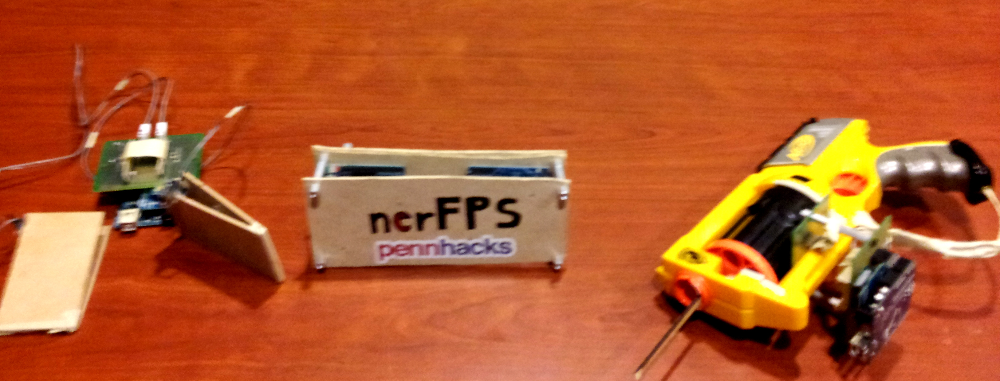

nerFPSPennHacks 2013 - University of Pennsylvania PennHacks presentation - Starting at 5:20  Description
DetailsThe leap motion helped us track the gun point in real time, and an onboard trigger detection on the nerf gun wirelessly sent data to the computer which interpreted it as a shoot command. Similarly, the pedals were also wirelessly linked to communicate motion commands to the computer. With these capablities, we were able to play Counter Strike using an "actual" gun and by actual moving our feet (though not too much). |
|
Aditya Sreekumar |